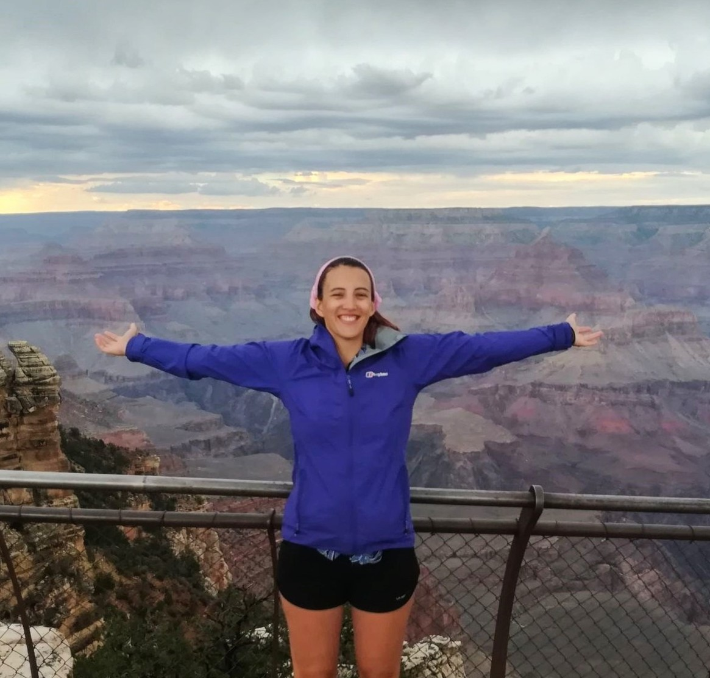

<!DOCTYPE html>
<!--profile box-->
<aside id="sidebar-container">
    <div class="profile-sidebar">
    <div class="profile-pic">  </div>
    <div class="profile-name">Dr Emily R. Bamber, <i>PhD</i></div>
    <div class="profile-job1">Title A Research Fellow</div>
    <div class="profile-job2">Trinity College / Earth Sciences</div>
    <div class="profile-job2">University of Cambridge</div>
    
    <div class="profile-socials">
        <div class="profile-socials-mail">
            <div class="mail-imgbox"><a href="mailto:eb2043@cam.ac.uk"></a></div>
            <div class="hovertip">mail</div>
        </div>

        <div class="profile-socials-orcid">
            <div class="orcid-imgbox"><a href="https://orcid.org/0000-0002-3920-4970" target="_blank"></a></div>
            <div class="hovertip">OrcID</div>
        </div>

        <div class="profile-socials-scholar">
            <div class="scholar-imgbox"><a href="https://scholar.google.com/citations?hl=en&amp;user=PSM83ZsAAAAJ&amp;view_op=list_works&amp;authuser=1&amp;sortby=pubdate" target="_blank"></a></div>
            <div class="hovertip">google scholar</div>
        </div>

        <div class="profile-socials-github">
            <div class="git-imgbox"><a href="https://github.com/eb-mars" target="_blank"></a></div>
            <div class="hovertip">github</div>
        </div>
</aside>